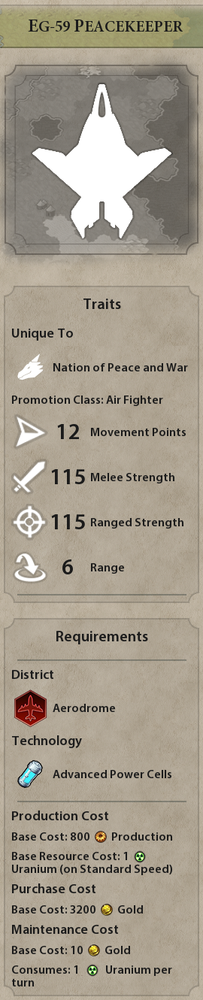

Evergreen Aquamarine Leader
A mod for Sid Meier's Civilization VI

Civ 6 is one of my favorite games. You need to manage an empire across different ages of history. Starting in the ancient era with slingers and clubbers, you'll end in the future era with giant mechs the size of cities. I have always adored this game, and I was feeling like modding it, so I ended up making a mod that adds in myself!
I wanted to keep my privacy intact, so I used my steam username - Evergreen Aquamarine - as my name. I chose Sylveon to represent myself for a number of reasons, but most of all they're just one of my favorite Pokémon and I didn't want to use my real face for this mod. It's because of this image that I set the mod to friends only. I've been using this image for a long time as my profile picture, but I can't find where it originates from or what usage license it's under. Playing it safe, I just made this mod for myself and a few friends.
Otherwise, this mod is a kind of realistic interpretation of how I'd manage an empire - kind of. Since this is just a game, I can be very hostile and greedy when I play in order to gain an advantage towards victory. The other people I play with have picked up on this, so they never trust me and know that I am a warmonger. So I made my leader an amalgamation of how I would actually rule and how I play the game.

Starting with how I would actually rule, my character is very informal. If I were in a position of power, I would just want to be myself instead of masking myself. Additionally, my leader is very much a tree hugger. They get reduced yields from chopping down forested areas or otherwise destroying the natural world for human advancement. As a bonus, however, all natural features that are "unappealing" - like rainforests and marshes - become beautiful. My nation can also build a special preservation district, and can build unique building inside of it that boost the output of nearby natural features without harming them. Finally, they also cannot build coal or oil power plants since I hate them due to their environmental impact. Instead, I get bonuses to nuclear power plants since I have a personal interest in them and they're very clean.
Every civilization gets a unique unit that typically outclasses other units of their era. I decided to pull from one of my favorite games for this one: Xenonauts. Evergreens unique unit is the EG-59 Peacekeeper. It's based heavily off the X-59 Marauder from Xenonauts. In Xenonauts, this is my favorite interceptor since it's so versatile. With its forward swept wings, it has a distinct silhouette that would distinguish it from other aircraft in Civilization as well. It's slightly stronger and faster than other aircraft which gives it a nice advantage but it's strongest feature comes from it's unique ability to destroy giant death robots. In Civilization, late game combat is very different from the early or mid game. You unlock giant death robots [GDRs] with a late game science that almost immediately makes every other unit obsolete. With all of the upgrades it has anti-air capability, insane melee damage, insane ranged damage, insane armor, and insane movement speed. It's only real counter is to have a GDR of your own. I designed the Peacekeeper to turn this on it's head. While the Peacekeeper is very strong, it's vulnerable to anti-air units and has a penalty against attacking ground units. However, the Peacekeeper gains a huge bonus to it's firepower when it attacks GDRs. This makes a rock paper scissors game, where Peacekeepers beat GDRs, GDRs beat ground units, and ground units beat Peacekeepers. In my opinion, this is a decent system that makes the Peacekeeper strong but not overpowered (hopefully).
My characters personality is based on how I as a player would play the game. I tend to keep to myself and focus on building wonders and maximizing my science output. So I made my character overly friendly towards other players, and gave them an enormous list of my favorite buildings and wonders that they should prioritize. However, I'll often get incredibly greedy and turn to warfare as a way of securing my interests. This has made me notorious among my civilization friends for being a two-faced liar and a greedy asshole - which is fair. So I gave my leader some traits that activate in the later game that make them hungry for war, such as the "nuke happy" trait. This creates an AI that plays very similar to how I would:
- They focus on building up their infrastructure in the early game
- They absolutely spam out wonders that I love
- Then they turn to warfare in the mid to late game, bullying smaller empires while they run away with a science victory
The civilization AI is notoriously crappy, and there really aren't that many tools that modders can use to fix this. However, weather by a stroke of luck or by the instructions I fed the game engine, the first game where I tested them with my friends was absolutely perfect. Evergreen spawned in the middle of the map, and started harassing one of my friends, trying incessantly to be friendly with them. This was the exact way that I treat this friend too, so this was really funny. Towards the mid game, they started gaining a lead in science, which snowballed to a ridiculous degree. Below you can see an image of each leaders progress down the technology tree. Three civilizations are an era behind me (the human) in technology, they currently have industrial era technology like ironclads and field cannons. Human me and one other empire are ahead of the pack in the modern era, working with biplanes and battleships.

But then there's Evergreen Aquamarine, my AI. In the screenshot, they are three entire eras ahead of anyone else and are in the future era. They have technology like giant death robots, thermonuclear bombs, and their unique marauder unit. After gaining this insane lead, they suddenly turned hostile and started attack the friend who they previously were trying to befriend - just as I have done before. Civilization bots are terrible at finishing out games, so they ultimately ended up losing to me. However, it was absolutely perfect and I felt like a proud parent for making this little gremlin.
Published on Steam, set to friends only